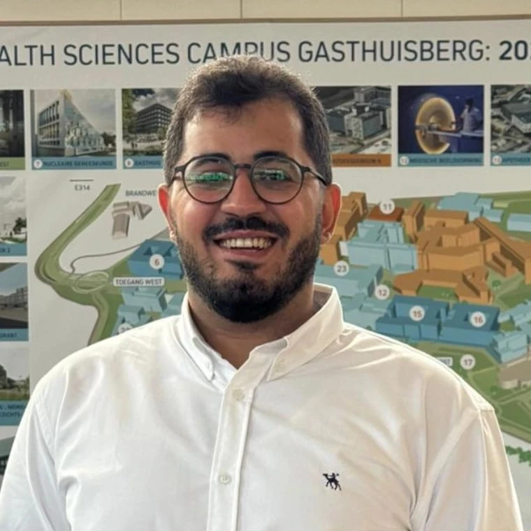

Image-based airway CFD
I reconstruct airways from micro-CT to study how small-airway disease changes pressure loss and resistance in chronic obstructive pulmonary disease (COPD).
Postdoctoral researcher
I study how changes in airway structure and mechanics affect lung function.
My research combines medical imaging, computational fluid dynamics and mathematical models of respiration. I work at the Laboratoire Jean-Alexandre Dieudonné, Université Côte d’Azur.

Airway structure, airflow and lung function
I reconstruct airways from micro-CT to study how small-airway disease changes pressure loss and resistance in chronic obstructive pulmonary disease (COPD).
At LJAD, I develop mathematical models of airway-tissue viscoelasticity and use OpenFOAM to study air–mucus interfacial flow and plug formation.
I develop models of forced expiration and gas exchange to connect airway mechanics and regional ventilation to measures of lung function.
Respiratory mechanics and small-airway disease
Yousry K. Mohamady, Charlotte De Fays, Iwein Gyselinck et al.
SSRN preprint
Yousry K. Mohamady, Vincent Geudens, Charlotte De Fays et al.
EBioMedicine
Vincent Geudens, Charlotte De Fays, Lynn Willems et al., including Yousry K. Mohamady
American Journal of Respiratory and Critical Care Medicine